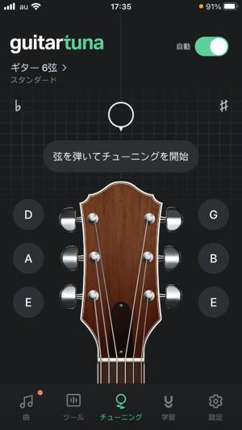
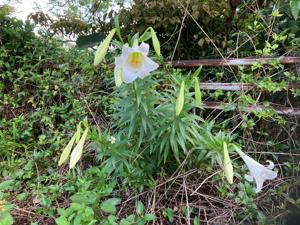

うるがいの話 ある日
最新: 万歩計【うるがいの話 ある日】とは 一日だけのプログです
『うるがいの話』の最新一日だけのプログで、通信料が少なく経済的だ。カニの画像をクリックすると全ての日付が載る『うるがいの話』サイトを表示します
|
|
【うるがいの話】 うるがい(ｳﾙｶﾞｲ urugai)とは、『もずくがに』の名前でとても大きくなります。 |
|---|---|
|
|
【カミマヤーの話】 猫のことを方言でマヤーといいます。カミマヤー（kamimayaa）とは、神の猫のことです。 |
|
【たながぁの音楽】 たながぁ（ﾀﾅｶﾞｰ tanagaa）とは手長えびのことで、何種類かあり大きいのは車 エビぐらいになります。 |

|
【ぶながぁの話】 ぶながぁ(ﾌﾞﾅｶﾞｰ bunagaa)とは、赤い髪の毛、赤い身体、そして身長は１ｍ２０ｃｍ ぐらい、川の蟹を食べているの目撃された。場所は沖縄県国頭郡大宜味村のと ある村僕の隣近所に住んでいる爺さんから、聞いた話です。 |
|
|
【ギーマの話】 ギーマ(giima)とは、山原の里山に咲くスズランに似た、 花を付けます。実は食べられます、 気が付くと口の周りが紫になっています。 |
2023年04月29日 (土）万歩計
15:10
 
新しいスマホにある訳の分からないアプリを調べ、削除と整理を行った。でな
んと日々の万歩計が、記録されたいた（２０２２年の１月まで遡れた）。
直近の首里城公園ジョギング 9,578歩/日
直近のウォーキング 8,077歩/日
直近のジョギング 5,745歩/日
2023年 6,462歩/日
2022年 5,614歩/日
一万歩には届かないが、マ、大概がジョギングなのでヨシとすべ。ジョギング
だと同じ距離でも、歩数が大幅に減るのである。利用しているアプリで重宝し
ているのが、ギターをチューニングするとき使っているＧｕｉｔａｒ Ｔｕｎ
ａｒ（有料での利用だと９割引きで月額３００円）がある。数日ごとに有料へ
の手続きを勧められるが、アプリの再起動で利用（７日間の無料の機能）でき
るので勧誘に耐えている。ウェブ上に無料のチューニングできるサイトが、複
数あるが、機能が劣り代替できず。
チューナーの無料アプリについて
2022.09.28
チューナー（チューニングメーター）をまだ持っていない、買っていない初心
者の方には、スマホの無料アプリの使用を勧めてきました。
特に緑のピック型アイコンの「ギターチューナー」（Guitar Tuna）を今まで
勧めてきたのですが、その後このアプリが仕様変更をしていまして、いくつか
問題があることがわかりました。
使い方としては大変便利でおすすめなんですが、現在は最初にインストールす
ると、最初７日間無料お試し、その後自動的に（解約しないと）サブスクリプ
ションとしての利用となり、課金されるようなシステムになっています。
しかもそのあたりの手続きがちょっとわかりにくくなっていて、知らず知らず
のうちにサブスクを契約していて課金されていた、なんていうトラブルも発生
しているようです。
初心者の方には特に、機能的にはおすすめなので残念な話なんですが・・・
この記事を読むとドキドキ、でも私のスマホは、そもそもサブスクリプション
は（定期購読、継続購入）なんたるもで、アプリをひとつも登録していないの
で大丈夫かな。
１５時０４分 ビットコインの総資産 ￥１１、５９５（↑５８）